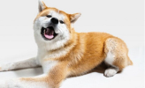
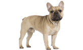

Kutya fajták
Boxer

A bokszer napjaink egyik legnépszerűbb kutyafajtája. Sokak szerint marcona kinézete ellenére egy nagyon jóindulatú, barátságos, de ugyanakkor bátor fajta, mentes minden hátsó szándéktól. Tovább...
Akita
Az akita vagy akita inu (秋田犬), gyakran az írásjegy másik, kínai olvasata szerint akita ken, egy Japánból származó kutyafajta. Neve az Akita prefektúrából és az inu (japánul: kutya) szóból tevődik össze. Nevezik még matagi inunak is a medvevadász múltja után. Az akita a szamurájok kutyája volt, Japánban az egészség és a jólét jelképe. 1999 óta megkülönböztetik az akita inu és a nagy japán kutya néven elfogadott amerikai akitának is nevezett fajtát. Az amerikai akita nagyobb, vaskosabb fajta, sötétebb fejjel.Tovább...
Golden retriver

A golden retriever (magyarul arany retriever) skót eredetű, középtermetű elhozó vadászkutya. Gyakran alkalmazzák segítőkutyaként, de kedves, barátságos természete miatt a városlakók körében is népszerű háziállat.Tovább...
Francia bulldog
A francia buldog igen közismert kutyafajta. A dogoktól származik, melynek degenerálása már szaporodási rendellenességek sorozatában jelentkezik. Környezeti hatásokkal szemben igen érzékeny, de ragaszkodó természetű, jól őrző hajlamú. Kizárólag kedvtelésből tartják.Tovább...